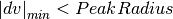

IntegratePeaksMD dialog.
Table of Contents
| Name | Direction | Type | Default | Description |
|---|---|---|---|---|
| InputWorkspace | Input | MDEventWorkspace | Mandatory | An input MDEventWorkspace. |
| PeakRadius | Input | number | 1 | Fixed radius around each peak position in which to integrate (in the same units as the workspace). |
| BackgroundInnerRadius | Input | number | 0 | Inner radius to use to evaluate the background of the peak. If smaller than PeakRadius, then we assume BackgroundInnerRadius = PeakRadius. |
| BackgroundOuterRadius | Input | number | 0 | Outer radius to use to evaluate the background of the peak. The signal density around the peak (BackgroundInnerRadius < r < BackgroundOuterRadius) is used to estimate the background under the peak. If smaller than PeakRadius, no background measurement is done. |
| PeaksWorkspace | Input | PeaksWorkspace | Mandatory | A PeaksWorkspace containing the peaks to integrate. |
| OutputWorkspace | Output | PeaksWorkspace | The output PeaksWorkspace will be a copy of the input PeaksWorkspace with the peaks’ integrated intensities. | |
| ReplaceIntensity | Input | boolean | True | Always replace intensity in PeaksWorkspacem (default). If false, then do not replace intensity if calculated value is 0 (used for SNSSingleCrystalReduction) |
| IntegrateIfOnEdge | Input | boolean | True | Only warning if all of peak outer radius is not on detector (default). If false, do not integrate if the outer radius is not on a detector. |
| AdaptiveQBackground | Input | boolean | False | Default is false. If true, BackgroundOuterRadius + AdaptiveQMultiplier * |Q| and BackgroundInnerRadius + AdaptiveQMultiplier * |Q| |
| Cylinder | Input | boolean | False | Default is sphere. Use next five parameters for cylinder. |
| CylinderLength | Input | number | 0 | Length of cylinder in which to integrate (in the same units as the workspace). |
| PercentBackground | Input | number | 0 | Percent of CylinderLength that is background (20 is 20%) |
| ProfileFunction | Input | string | Gaussian | Fitting function for profile that is used only with Cylinder integration. Allowed values: [‘BackToBackExponential’, ‘Bk2BkExpConvPV’, ‘DeltaFunction’, ‘ElasticDiffRotDiscreteCircle’, ‘ElasticDiffSphere’, ‘ElasticIsoRotDiff’, ‘ExamplePeakFunction’, ‘Gaussian’, ‘IkedaCarpenterPV’, ‘Lorentzian’, ‘PseudoVoigt’, ‘Voigt’, ‘NoFit’] |
| IntegrationOption | Input | string | GaussianQuadrature | Integration method for calculating intensity used only with Cylinder integration. Allowed values: [‘Sum’, ‘GaussianQuadrature’] |
| ProfilesFile | Input | string | Save (Optionally) as Isaw peaks file with profiles included. Allowed values: [‘profiles’] | |
| AdaptiveQMultiplier | Input | number | 0 | PeakRadius + AdaptiveQMultiplier * |Q| so each peak has a different integration radius. Q includes the 2*pi factor. |
| CorrectIfOnEdge | Input | boolean | False | Only warning if all of peak outer radius is not on detector (default). If false, correct for volume off edge for both background and intensity. |
This algorithm performs integration of single-crystal peaks within a radius (with optional background subtraction) in reciprocal space.
See IntegrateEllipsoids v1 for a ways of integrating peaks from data collected in EventWorkspace. PeakIntensityVsRadius v1 is meant to help determine an appropriate value for PeakRadius.
The algorithms takes two input workspaces:
Integration is performed by summing the weights of each MDEvent within the provided radii. Errors are also summed in quadrature.

IntegratePeaksMD_graph1.png

 and the summed
squared error
and the summed
squared error  .
. .
. and the summed
squared error
and the summed
squared error  .
.The background signal within PeakRadius is calculated by scaling the background signal density in the shell to the volume of the peak:

with the error squared on that value:

This is applied to the integrated peak intensity to
give the corrected intensity  :
:

with the errors summed in quadrature:

If BackgroundInnerRadius is left blank, then BackgroundInnerRadius = PeakRadius, and the integration is as follows:

IntegratePeaksMD_graph2.png
Edges for each bank or pack of tubes of the instrument are defined by masking the edges in the PeaksWorkspace instrument. e.g. For TOPAZ pixels 0 and 255 in both directions for the Rectangular Detector. Q in the lab frame for every peak is calculated, call it C For every point on the edge, the trajectory in reciprocal space is a straight line, going through:

Calculate a point at a fixed momentum, say k=1. Q in the lab frame:

Normalize E to 1:

The distance from C to OE is given by:

If:

for the integration, one of the detector trajectories on the edge is too close to the peak This method is also applied to all masked pixels. If there are masked pixels trajectories inside an integration volume, the peak must be rejected.
This is an extension of what was calculated for the IntegrateIfOnEdge option. It will only be calculated if this option is true and the minimum dv is less than PeakRadius or BackgroundOuterRadius.
For the background if


From the minimum of dv the volume of the cap of the sphere is found:

The volume of the total sphere is calculated and for the background the volume of the inner radius must be subtracted:

The integrated intensity is multiplied by the ratio of the volume of the sphere divided by the volume where data was collected

For the peak assume that the shape is Gaussian. If



From the minimum of dv the volume of the cap of the sphere is found:

and the volume of the sphere is calculated

The integrated intensity is multiplied by the ratio of the volume of the sphere divided by the volume where data was collected

Example - IntegratePeaks:
The code itself works but disabled from doc tests as takes too long to complete. User should provide its own event nexus file instead of TOPAZ_3132_event.nxs used within this example. The original TOPAZ_3132_event.nxs file is availible in Mantid system tests repository.
1 2 3 4 5 6 7 8 9 10 11 12 13 14 15 16 17 18 19 20 21 22 23 24 25 26 27 28 29 30 31 32 33 34 35 36 37 | #.. testcode:: exIntegratePeaksMD
def print_tableWS(pTWS,nRows):
''' Method to print part of the table workspace '''
tab_names=pTWS.keys();
for name in tab_names:
if len(name)>8:
name= name[0:8];
print "| {0:8} ".format(name),
print "|\n",
for i in xrange(0,nRows):
for name in tab_names:
col = pTWS.column(name);
data2pr=col[i]
if type(data2pr) is float:
print "| {0:8.3f} ".format(data2pr),
else:
print "| {0:8} ".format(data2pr),
print "|\n",
# Load a SCD data set and find the peaks
LoadEventNexus(Filename=r'TOPAZ_3132_event.nxs',OutputWorkspace='TOPAZ_3132_nxs')
ConvertToDiffractionMDWorkspace(InputWorkspace='TOPAZ_3132_nxs',OutputWorkspace='TOPAZ_3132_md',LorentzCorrection='1')
FindPeaksMD(InputWorkspace='TOPAZ_3132_md',PeakDistanceThreshold='0.15',MaxPeaks='100',OutputWorkspace='peaks')
FindUBUsingFFT(PeaksWorkspace='peaks',MinD='2',MaxD='16')
# Perform the peak integration, in-place in the 'peaks' workspace.
peaks= IntegratePeaksMD(InputWorkspace='TOPAZ_3132_md', PeaksWorkspace='peaks',\
PeakRadius=0.12, BackgroundOuterRadius=0.2, BackgroundInnerRadius=0.16,\
OutputWorkspace='peaks')
# print the integration results
print_tableWS(peaks,10)
|
Output:
1 2 3 4 5 6 7 8 9 10 11 12 13 | #.. testoutput:: exIntegratePeaksMD
| RunNumbe | DetID | h | k | l | Waveleng | Energy | TOF | DSpacing | Intens | SigInt | BinCount | BankName | Row | Col | QLab | QSample |
| 3132 | 1168976 | 0.000 | 0.000 | 0.000 | 1.106 | 66.853 | 5161.495 | 0.664 | 2161.555 | 32.493 | 1042.000 | bank17 | 80.000 | 214.000 | [4.42299,2.80447,7.87903] | [8.7569,3.57474,-0.211883] |
| 3132 | 1156499 | 0.000 | 0.000 | 0.000 | 2.081 | 18.887 | 9708.954 | 1.297 | 5137.547 | 13.432 | 828.000 | bank17 | 147.000 | 165.000 | [2.49809,1.45732,3.88559] | [4.53003,1.70942,0.137013] |
| 3132 | 1156756 | 0.000 | 0.000 | 0.000 | 1.040 | 75.677 | 4850.409 | 0.648 | 1597.017 | 30.643 | 577.000 | bank17 | 148.000 | 166.000 | [5.00569,2.90696,7.77943] | [9.06543,3.43008,0.281929] |
| 3132 | 1141779 | 0.000 | 0.000 | 0.000 | 1.704 | 28.167 | 7952.321 | 1.049 | 648.434 | 7.481 | 379.000 | bank17 | 19.000 | 108.000 | [2.61862,2.31234,4.86545] | [5.69642,1.79732,-0.443944] |
| 3132 | 1124982 | 0.000 | 0.000 | 0.000 | 1.555 | 33.819 | 7256.594 | 1.014 | 1990.427 | 14.457 | 330.000 | bank17 | 118.000 | 42.000 | [3.14235,2.43685,4.75299] | [5.97935,1.62817,-0.00373607] |
| 3132 | 1170597 | 0.000 | 0.000 | 0.000 | 1.551 | 34.005 | 7237.138 | 0.951 | 1825.812 | 14.812 | 327.000 | bank17 | 165.000 | 220.000 | [3.42477,1.70221,5.38678] | [6.06909,2.59493,0.276379] |
| 3132 | 1124982 | 0.000 | 0.000 | 0.000 | 3.111 | 8.454 | 14514.017 | 2.028 | 749.742 | 2.242 | 268.000 | bank17 | 118.000 | 42.000 | [1.57108,1.21836,2.37636] | [2.9895,0.814038,-0.00186793] |
| 3132 | 1232181 | 0.000 | 0.000 | 0.000 | 1.238 | 53.388 | 5776.071 | 0.934 | 3460.775 | 25.974 | 1229.000 | bank18 | 53.000 | 205.000 | [4.28486,2.64933,4.45466] | [6.52915,1.2635,0.998372] |
| 3132 | 1200023 | 0.000 | 0.000 | 0.000 | 1.433 | 39.816 | 6687.166 | 1.232 | 963.069 | 9.208 | 990.000 | bank18 | 151.000 | 79.000 | [3.37972,2.40572,2.9675] | [5.01065,0.386939,0.871633] |
| 3132 | 1218594 | 0.000 | 0.000 | 0.000 | 1.016 | 79.240 | 4740.921 | 0.776 | 2999.159 | 35.467 | 901.000 | bank18 | 34.000 | 152.000 | [4.9551,3.59367,5.30453] | [7.96049,1.19466,0.899379] |
|
Categories: Algorithms | MDAlgorithms\Peaks